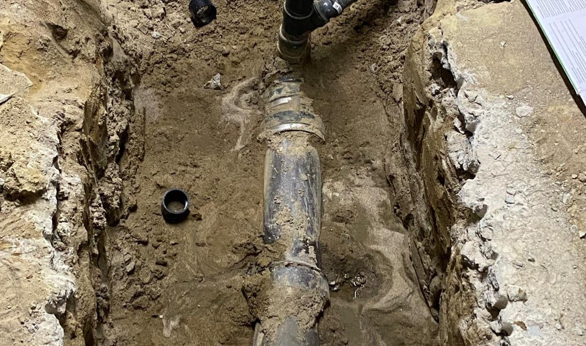

Home › Services › Sewer backup & main line
Sewer backup & main line · Toronto · 24 hours
Sewage in the basement is an emergency. We treat it like one.
A backup isn't just a mess. It's contaminated water in your home and a sign something is wrong in the main line: tree roots, a cracked or collapsed clay pipe, grease and wipes, or a storm overwhelming an old system. We stop it, find the cause and show you what we found on camera.
5.0 on Google from 248 reviews · Price before we start · Same rate nights and weekends

What we handle
- Emergency containment and main line clearing
- Tree root removal (auger and hydro-jet)
- Camera inspection of the sewer lateral
- Sewer line repair and replacement
- Backwater valve installation and repair
- Sump pump repair and replacement
- Basement floor drain backups
- Restaurant and commercial drain backups
Related
How it goes
What happens when you call
Contain and clear
We stop the backup, protect the rest of the home and clear the main line with professional augers or hydro-jetting.
Camera the line
We inspect the lateral on video so you can see cracks, roots, bellies or collapse. No guessing.
Fix it for good
Spot repair, full replacement or a backwater valve, with options and prices before we dig.
Questions
Sewer backup & main line FAQ
Is a sewer backup covered by insurance?
Often, if you have sewer backup coverage on your home policy. Our camera footage and written report help with the claim.
Can a backwater valve stop this happening again?
A backwater valve stops the city sewer from flowing back into your home during storms. We install and service them.
Will you have to dig up my basement?
Only if the line is damaged. Most backups are cleared without excavation. When digging is needed, you'll see the camera footage and agree to the price first.
Ready when you are. Any hour.
One number, a real person, a price before we start.